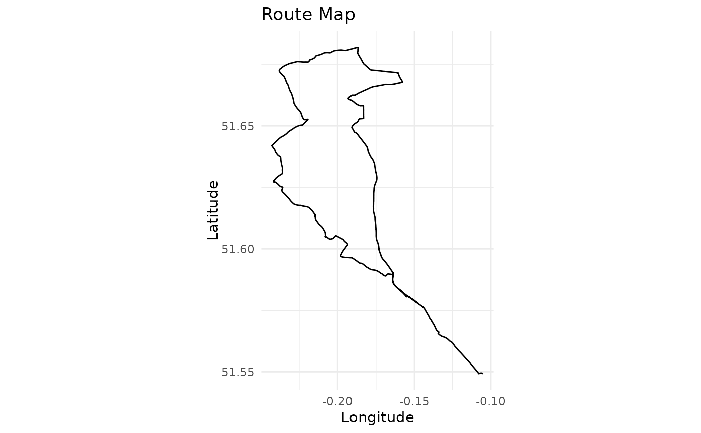

Plot GPX route visualisation
plot_route.RdCreates visualisations of a GPS route, including an elevation profile and a route map.
Details
This function creates two visualisations:
An elevation profile showing elevation changes against distance travelled
A simple route map showing the geographical path
Both plots are created using ggplot2 with minimal styling.
Examples
# Use the example GPX file included in the package
example_gpx_path <- system.file("extdata", "icc_intro_ride.gpx", package = "gpxtoolbox")
# First read a GPX file
track_data <- read_gpx_track(example_gpx_path)
# Calculate cumulative distance (required for plotting)
track_data <- calculate_distance(track_data)
# Plot the route visualisations
plot_route(track_data)

